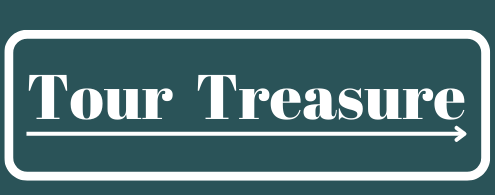

Discover the Heartbeat of Pakistan's Cultural Heritage at Lok Virsa
Welcome to Lok Virsa, the vibrant pulse of Pakistan's cultural tapestry! Nestled in the heart of Islamabad, Lok Virsa stands as a testament to the nation's rich and diverse heritage. As a beacon of tradition and a celebration of creativity, Lok Virsa invites you on a captivating journey through the sights, sounds, and stories that have shaped Pakistan's identity.
Immerse Yourself in Living History
Step into a world where time-honored traditions come alive. Our meticulously curated museum exhibits transport you through the ages, unraveling the threads of Pakistan's folklore, art, crafts, and rituals. From intricately woven textiles to mesmerizing musical instruments, each artifact tells a tale of the people who have passed down their legacies through generations.

Enchanting Festivals and Events
At Lok Virsa, every day is a festival of culture and heritage. Join us as we host a kaleidoscope of events that showcase the vibrant soul of Pakistan. From spirited folk dances that resonate with the heartbeat of the land to lively musical performances that echo the melodies of the past, our events are a harmonious blend of tradition and modernity.

Crafting Connections
Lok Virsa isn't just a place; it's a living bridge that connects the past with the present. Our workshops and interactive sessions invite you to engage with master craftsmen and artisans who continue to shape Pakistan's artistic landscape. Discover the secrets of pottery, woodwork, embroidery, and more, as you become a part of a legacy that spans centuries.

Preserving Our Legacy
More than an institution, Lok Virsa is a custodian of cultural treasures. We're committed to safeguarding the intangible heritage that defines us. Through our research initiatives and documentation efforts, we ensure that the stories, songs, and traditions of Pakistan endure for generations to come.

A Journey Beyond Boundaries
Lok Virsa is more than a destination; it's an experience that transcends borders. By celebrating diversity and fostering unity, we stand as a symbol of Pakistan's enduring spirit. Whether you're a local enthusiast or a global explorer, Lok Virsa welcomes you to embark on a journey that celebrates the mosaic of humanity.